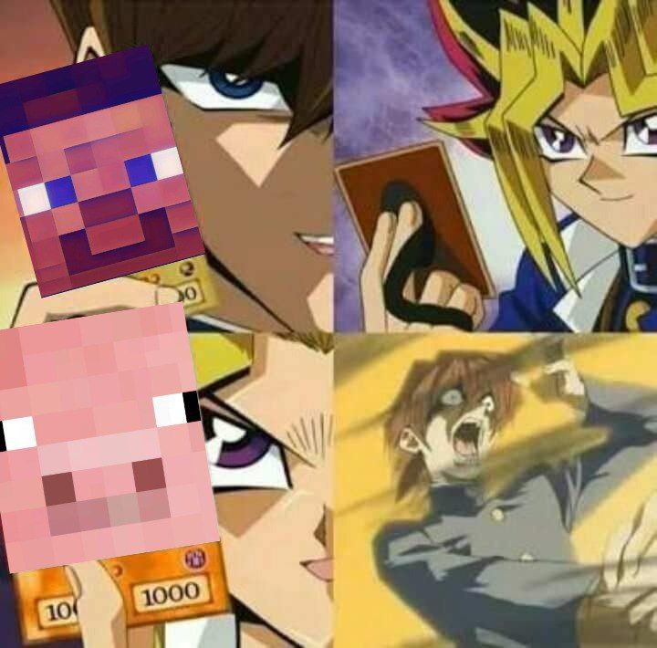

Since day 1, I liked the pig and the Minecraft narrative. A few days later, I resonated with it. I am that person who believes I have huge potential and I work to show it to the world. That is the same way I feel with pig. Pig has this huge potential but the steves just would not give it a chance. In real life, I feel that way too, but with the help of my supportive family and friends I could shine. I believe that if we could gather enough pigs and outnumber the Steves, the community can reach back the highs.
I further envision this to be a long-term project and community. As a minecraft-themed coin, I want this to be gamified. I want people to hold and utilize the token and give them the reason to always choose to stay. There are a lot of gamers in the world, not necessarily Minecraft gamers, and if we could onboard some of them, the community would be hell of a fun.
I'm a memer myself and I would never lose ideas. I want to entertain you. The pig will entertain you. So choose: Fade us and be a Steve or join us in an exciting journey.

